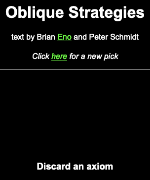

Word 1: Flow
Word 2: Nodes
Word 3: Particles
An axiom, as per its definition, is a point from which we may start to reason.
As such, these were the initial 3 “axioms” I used for my sketch. However, the developing process is never perfect and I ran into far too many problems trying to implement the second axiom “Nodes” that I had two days left before the deadline and still have not completed the movements for “Flow” and “Particles”.

Thanks to Brian Eno’s Oblique Strategies helping me break out of my designers block, I decided to drop the Nodes idea in the effort to find a new word. I did however learn a lot about how to calculate forces for the Haply. As such I started from scratch and within one night, I create a new set of words.
This time to not have any roadblocks in the development phase, I tested a few ideas before I decided on my words.
I like the idea of particles moving across the simulation moving the Haply’s end effector. As such I tested how easy it is to move static objects.
Add Video
Once achieved, I moved on to testing my next idea. I knew I wanted to use forces, by realizing that gravitational forces seem to be a bit too tricky for the moment, I decided to test with the concept of noise, or rather friction in this case. At first, I tried to use the hAPI’s fBody class “setfriction” function but soon realized it did not have the same effect I had hope for as it did not yield any noticeable change in how the haply interacted with the fBody. So, pulling from the knowledge I cultivated from trying to implement the nodes, I chose to input noise into the force values of the haply. This was achieved by adding a scaled random value in the resulting end effector force variable:
f_ee.add(4000*random(0.0,1.0),4000*random(0.0,1.0));
Add video here:
Once I knew this was possible I found my idea for the second word.
Word 1: Particles
Word 2: Noise
Word 3: Space
Now is time to realize these idea. I first started with the second word, “Noise”.
Throughout my design process I always had in mind that the sketch must have an overarching motion to it, like left to write. As such, I thought that I can use the noise to convey that idea to the use. I therefore decided to add a gradient to the noise based on its horizontal position in space. One side will naturally induce more noise into the end effector than the other.
It’s akin to concept of particles wanting to always go their lowers energy state, from High to Low potential energy.
Initially I decided to create a (as close too) continuous noise gradient in the environment.
This was achieved by taking the position of the end effector in the virtual space (not measured position, there is a different to be made here),
ee_vposx = s.getAvatarPositionX(); ,
and then slowly increase the end effector forces noise level as it’s going in a certain direction. This was rather simple to do, however it did not feel as though it was enough, there was not enough texture to its feeling. So, I discretized it to create strips of friction within the environment.
Each strip will also gradually increase and decrease to and from the max friction value based on ds, the max distance away from the midpoint of the strip. I was able to achieve this by wrapping the position of the end effector with a modulo function based on the number of strips I want dividing up the max width of the world.
Once that was completed, I proceeded to implement the particles. Since I have a horizontal direction, I thought of using the particles as a way to induce direction on the vertical axis. I thus decided to put them in the middle of the world going from top to bottom as a way create the idea of a stream of particles that the user is passing through.
Add Video.
This was achieved by positioning 3 FCircle objects in the center of the sketch and having them move from top to bottom. Every time they wrap around, the speed at which they are moving changes.
Finally, when implementing the idea of the walls I decided to change my approach and simple create one wall with two opening at the bottom and top of the wall so that the user needs to find them by touch. This choice was for simplicity reasons as there was too much feedback from the end effector due to the noise strips and the particles.
Now that all 3 words have been implemented, let review them:
Word 1: Particles
Word 2: Textured gradient
Word 3: Space
When working on this lab. I ran into a big roadblock at the beginning when trying to implement a simple kind of gravity. That being said, I did learn a lot on how the API computes all of the forces and objects. As such when moving past this, I was able to implement my friction model quickly and efficiently. I think that the most expressive part is the textured gradient movement amongst the three as it is the most continuous movement in the sketch. I feel as though I wished it could have been more of an experience than the playground it currently feels like.
When showing this to a few people I got some input on what they though was happening.
The first tester gave as words: scratching, bouncing and contour. They all describe appropriately the three movements in my sketch.
Whilst the second gave as responses: rough, gears and springy. For roughness, it meant that they were able to perceive the strips of texture, however the gradient was hard to notice, meaning that I should implement a different kind of gradient next time. The gears were close to particles as they both would move the end effector in similar manners and as for springy, I think that it is a better word to describe the wall that was implemented instead of the word space.